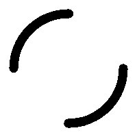

Deskripsi
Website "Get Random" merupakan aplikasi untuk mendapatkan nilai acak dari daftar yang diberikan. Daftar dimasukkan oleh user dengan pemisah antar nilai berupa baris baru.
Metode
- Normal: Teks daftar bersifat statis, nilai yang sudah muncul akan tetap dipertahankan dari daftar.
- Eliminasi: Teks daftar bersifat dinamis, nilai yang sudah muncul akan dihapus dari daftar.
Fungsi Tombol
- Lock & Unlock: untuk mengunci dan membuka teks yang dimasukkan, pastikan format pengisian sudah benar.
- Play: untuk menjalankan program, teks harus dikunci terlebih dahulu sebelum dijalankan.
- Stop: untuk menghentikan dan mendapatkan hasil dari program yang dijalankan.
- Delete: untuk menghapus daftar yang dibuat.